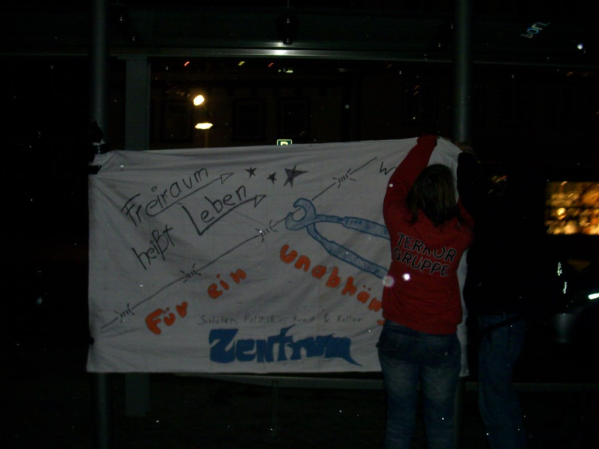

Wie wir schon berichteten wurde von der Jugendinitiative für ein unabhängiges Zentrum an die Stadt die Forderung gestellt innerhalb eines Monats endlich etwas zu unternehmen, um sichtbare Ergebnisse vorzuweisen. Dieser Monat ist um und immer noch immer wurde nichts unternommen. Aus diesem Grund kam es von den Jugendlichen erneut zu einer spontanen und kreativen Aktion, um die Forderungen zu untermauern und das Problem zu veranschaulichen: Mit einem selbst gebastelten Jugendraum aus Pappkartons und guter Musik wurde auf dem Platz, vor dem miltenberger Rathaus die Eröffnungsfeier nachgestellt, wobei auch die Presse eingeladen wurde. Leider wurde der eingeladene Pressevertreter direkt nach eintreffen der Polizei von eben dieser weggeschickt. Dies sehen wir als eindeutigen Angriff auf die Pressefreiheit!
Auch Subradical berichtete darüber: klick!
Im Anschluss noch der vollständige Bericht, der Jugendinitiative für ein unabhängiges Zentrum (mil-z.de.vu):

Nachdem immer noch nichts merklich unternommen wurde, um das Problem, dass es immer noch keinen Raum gibt, zu lösen, wurde entschieden, dass mit einer spontanen Aktion wieder darauf aufmerksam gemacht werden sollte. Rund 25 junge Leute trafen sich freitag, 08.01.2010 um 18 Uhr am Bahnhof. Der eigentliche Gedanke war: Wenn die Frist nun abgelaufen ist und eine Lösung (z.B. der besagte Bauwagen als Übergangslösung) da ist, kann mensch gemeinsam einen Spaziergang dorthin machen und quasi den Jugendraumbetrieb aufnehmen.
Da natürlich immer noch nichts passiert war, entschlossen sich die Leute zu einer spontanen (Party-)Demonstration. Dazu wurde vom nächsten Supermarkt ein Einkaufswagen geliehen und zu einer Art Lautsprecherwagen umfunktioniert, um die feiernden mit Musik zu versorgen. Mensch entschloss sich, zum Rathaus zu ziehen und dort aus Mangel an Alternativen den Jugendraumbetrieb aufzunehmen.
Als die Demonstranten gegen 18:30 Uhr am Engelplatz ankamen, wurden sie auch schon von einem Vertreter des „Boten vom Untermain“ erwartet, der in das weitere Vorhaben eingeweiht wurde und zu fotografieren begann.
Die Idee war, vor dem Rathaus aus Pappkartons einen Jugendraum zu bauen, nach dem Motto „Wenn wir nichts bekommen, müssen wir es halt selber bauen“. Also wurde begonnen zu basteln. Allerdings erschienen nach knapp zehn Minuten zwei Streifenwagen der Polizei. Zunächst versuchten die Beamten, einen Verantwortlichen bzw. einen Versammlungsleiter ausfindig zu machen, wobei sie allerdings enttäuscht wurden, da es schlicht keinen „Leiter“ gab. Kurz darauf kam es dann zu einer recht fragwürdigen Aktion von der Polizei: sie verwiesen den Pressevertreter des Platzes, nachdem dieser ihnen keinen Presseausweis vorlegen konnte. In dieser Aktion sehen wir nichts anderes als einen gefährlichen Einschnitt der Pressefreiheit, so etwas kann nicht einfach kommentarlos hingenommen werden.
Danach nahmen die Polizisten noch von einer offenbar willkürlich ausgesuchten Person die Personalien auf, vielleicht um sicherzustellen, dass der Einkaufwagen wieder zurückgebracht wird. Dann forderten sie die Aktivisten auf, die Musik des „Lautsprecherwagens“ etwas leiser zu stellen und den Platz nicht zu verschmutzen beziehungsweise etwas zu beschädigen.
Währendessen zeigte einer der Beamten mit dem Kommentar „Legt doch einfach alle zusammen und zahlt euch selbst einen Raum“, dass er einen sehr seltsamen Realitätssinn besitzt.
Die Beamten zogen sich in ihre Streifenwagen zurück, überwachten aber aus dem Fahrzeug heraus weiter die Aktion. Die Jugendlichen feierten unterdessen mit guter Musik (vor allem Hip-Hop und Punk) munter weiter mit ihrem frischgebauten Papp-Jugendhaus und simulierten somit den Betrieb eines „echten“ Zentrums.
Nach einiger Zeit wurde die Kälte allerdings zu unangenehm, um sie weiterhin nicht zu beachten, auch das Papphäuschen hielt dem Wetter nicht stand, weichte auf und fiel mit der Zeit in sich zusammen. Also räumten die Feiernden auf und entschieden, in den Automatenraum einer nahegelegene Sparkassenfiliale einzuziehen, wo dann kurze Zeit lang noch weiter gefeiert werden und gleichzeitig veranschaulicht werden konnte, wie die Situation für die jungen Leute speziell jetzt im Winter aussieht. Aber dies wurde recht schnell von der Polizei beendet, die den Sparkassenraum räumte, wobei einer der Beamten durch sehr aggressives Vorgehen auffiel.
Wieder auf der Straße im Kalten entschlossen sich die noch Anwesenden zu einer weiteren Spontandemonstration, diesmal in Richtung Bahnhof, um dort die Aktion auflösen zu können.
Diese lief los und schoss unterwegs ein kleines Feuerwerk ab. Auf dem Weg wurde sie von einem Streifenwagen begleitet. Kurz vor dem Ziel kam es dann noch zu verbalen Auseinandersetzungen, mit der Steifenbesatzung, weil die Polizei nicht einsehen wollte, dass die Demonstranten die Straße benutzen, diese sich aber nicht vorschrieben lassen wollten, wie sie zu demonstrieren hatten. Offenbar versuchten die Beamten daraufhin noch einen der Jugendlichen festzunehmen, was ihnen aber nicht gelang. So konnte die Aktion dann gegen 22 Uhr ohne größere Vorkommnisse aufgelöst werden.
Der Einkaufswagen wurde zurückgebracht und die Aktivisten verstreuten sich.
Alles in allem in unseren Augen eine gelungene Aktion mit der wir unsere Problematik vermitteln konnten. Wir hoffen, dass dieses Vermitteln auch gut funktioniert hat.
Für optische Eindrücke gibt es unter folgender Adresse Bilder von der Aktion:
http://www.flickr.com/photos/46400859@N02